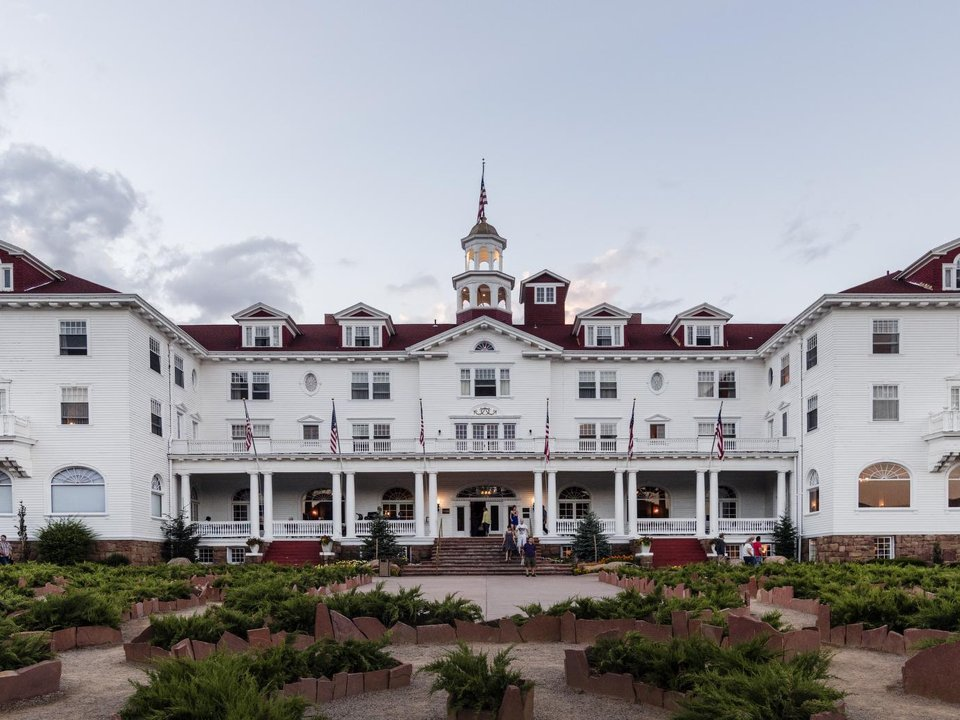

Estes Park · Historic hotel
The Stanley Hotel
A 1909 hotel above town, famous for its ghost tours.
Official details for The Stanley HotelElk, alpine roads and a famous old hotel.
Estes Park sits at the east entrance to Rocky Mountain National Park, where Trail Ridge Road climbs above the tree line to 12,183 feet and elk graze in the meadows. Land at Northern Colorado Regional between Fort Collins and Loveland, drive up the Big Thompson Canyon, stay at the 1909 Stanley Hotel, and spend a day in the park. Stop at New Belgium in Fort Collins on the way home.

In our plane it’s a short flight.
Where we’re staying Dinner Things to do The plan
I’ll handle the flight planning; you handle the fun planning! Pilot view
Time illustration: direct distance at 150 KTAS plus 15 minutes for departure and arrival, matching the discovery page. Use ForeFlight for your actual flight plan.
Check the weekend weather at both ends → Flight category, your minimums and the crosswind on the best runway.
More in Aviation & getting around below. Crew cars change often: call the FBO before you go. How to have a rental car waiting at the FBO · Know something we missed? Tell us.
KFNL, Northern Colorado Regional, is a towered airport at 5,020 feet with an 8,500-foot runway, about 45 minutes from Estes Park.
Northern Colorado Regional Airport, Loveland, CO
Another FBO: Professional Aircraft Services (970-679-4633). Strong westerly winds and mountain wave are common along the Front Range. Confirm a rental car before you go. No live fuel price is shown.
Front Range flying: strong westerly winds and mountain wave off the Rockies, high density altitude in summer, afternoon thunderstorms from June to August, and fast-changing winter weather. About 1310 nm from Myrtle Beach: two long days each way with several fuel stops. Plan a week, or overnight on the way out and back.
Rates and availability need travel dates. Book summer and elk-season weekends early.
A 1909 hotel above town, famous for its ghost tours.
Official details for The Stanley HotelA timber-and-stone lodge with mountain views and the Twin Owls Steakhouse.
Official details for Taharaa Mountain LodgeA romantic inn with cottages near the Big Thompson River.
Official details for RiverSong InnLog cabins and suites on wooded acres near the park.
Official details for Black Canyon InnCabins and suites on the river close to town.
Official details for The LandingLodges, cabins and inns.
Visit Estes Park for More places to stayPrices and availability for your dates, through our partner Stay22. This is an affiliate link: we may earn a commission at no cost to you. The picks above are never paid.
Reserve weekend dinners.
Colorado cooking in a mountain lodge.
Official details for Bird & JimRestaurants in Estes Park.
Visit Estes Park for More restaurantsReserve a timed-entry permit for the park in summer.
This prototype links to the local visitor site. It does not yet match events to your travel dates.
The highest continuous paved road in the country.
NPS for Trail Ridge Road openBugling elk in the meadows.
Visit Estes Park for Elk rutPipes and games.
Visit Estes Park for Longs Peak Scottish-Irish Highland FestivalCheck the local calendar when choosing a weekend, and confirm dates and tickets with the organizer.
A sample park weekend. This is a two-day flight each way; plan a week. No bookings or availability confirmed.
Land at KFNL early.
Drive to Estes Park and lunch.
Bear Lake, then back to the airport.
Land at KFNL, subject to weather, density altitude and your actual flight plan.
Drive up the Big Thompson Canyon and check in.
Dinner at Bird & Jim.
Trail Ridge Road, early.
Bear Lake walks.
A ghost tour at the Stanley.
New Belgium on the way home.
Compute takeoff performance for the morning temperature and allow time at the FBO.
Mountain afternoons bring wind, turbulence and storms; leave early.
Trail Ridge Road.
A Stanley Hotel tour.
Dinner at Bird & Jim.
This guide is part of a multi-stop flying trip. Set your dates and aircraft, then swap stops to make it your own.
These details make the difference between an appealing list and a usable getaway.
Hotel, park timed entry, then a car.
About 1,310 nm: two days each way.
Trail Ridge tops 12,000 feet.
June to October.
Picks and links reviewed by WingAway Weekends. Hours, prices, menus and availability change often, so confirm directly with each place before booking. Spotted something out of date, or have a favorite we missed? Email us at hello@wingawayweekends.com.
WingAway Weekends helps you discover the destination. Use ForeFlight and current official aviation information for route, performance, weather, NOTAMs and preflight decisions. Flight planning and PIC responsibility stay with the pilot.